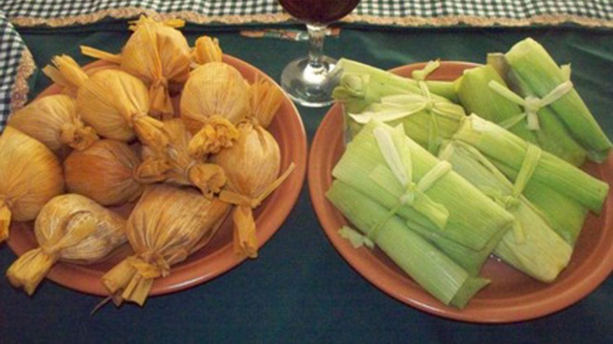

Es un remanso colonial en el extremo norte de Jujuy, declarado Lugar Histórico. Calles anchas flanqueadas por adobe, tejas y el sutil susurro del río homónimo definen su silueta. En las orillas del río crecen sauces de un verde intenso, destacándose contra el paisaje desértico. La iglesia barroca de Nuestra Señora del Rosario y la casa del marquesado son vestigios del virreinato, mientras que el aire limpio de altura invita a la contemplación.
¿Comó se llega?
En auto: Seguir la RN9 hasta La Quiaca y tomar el desvío hacia Yaví. El pueblo está a solo 16 km al sur de La Quiaca.
En colectivo: Desde la terminal de La Quiaca salen micros locales (p. ej. la línea El Yaveño) que comunican con Yaví. También se puede llegar en colectivo desde Humahuaca o Jujuy haciendo combinación en La Quiaca.
En avión: Volar a Jujuy y luego trasladarse a La Quiaca (aprox. 4 horas por RN9). Desde La Quiaca tomar taxi o colectivo local a Yaví (15–20 minutos más).
Actividades que se pueden hacer
- Iglesia de Nuestra Señora del Rosario y San Francisco
- Yavi barroco

Gastronomia
Tiene una gran variedad de riqueza grastronomica, como cultural
Kalapurca es guiso típico de la puna preparado con carne (cordero o llama), papas y verduras, cocido con piedras calientes dentro de olla de barro.
Una comida tipica jujeña. Que en sus interior de carne con especias y queso (humita)

Embutidos y fiambres de carne de llama curada, un sabor distintivo regional.